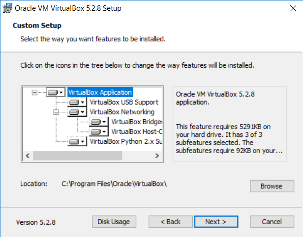
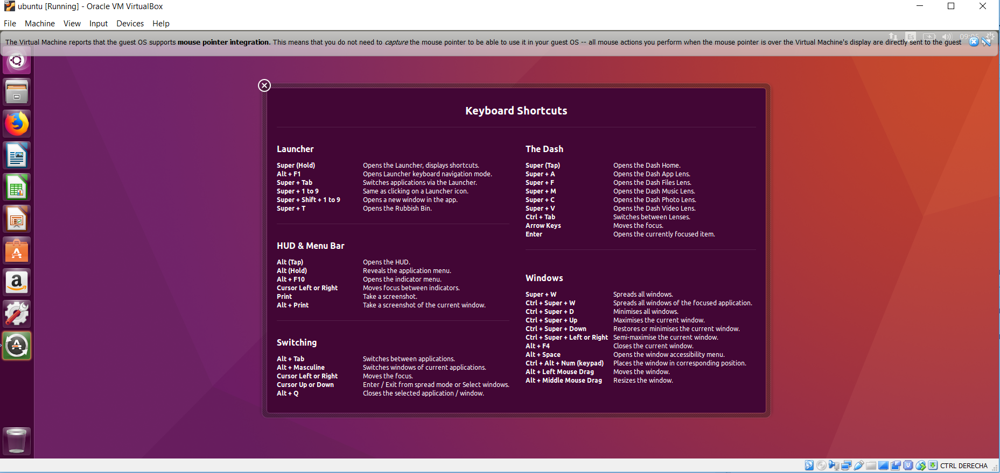

Installing ubuntu on windows machine
Jose Parreno Garcia
March 2018
library(knitr)If you have a windows machine and you dont want to replace the windows OS for a Linux OS, you can set up a virtual machine in your computer and install Ubuntu on it, leaving you with the default windows OS and the option of opening side by side an ubuntu instance.
Obviously, the best option is to have your own linux machine or a server where you can directly install ubuntu on it, but that costs extra money, so let’s stick to improving our windows machine a little bit.
1 Virtual Box
The first thing we need to do is install a virtual machine software on our laptop. There are multiple VM softwares in the internet, but I would recommend Virtual Box developed by Oracle. Its free and easy to set up.
1.1 Download
http://www.oracle.com/technetwork/server-storage/virtualbox/downloads/index.html1.2 Install


2 Download Ubuntu
Before setting up the VM with Ubuntu, we have to download first the Ubuntu OS.
2.1 Download
https://www.ubuntu.com/download/desktopYou will find multiple version of Ubuntu but I recommend downloading the latest LTS version (long term support version), as it is more stable and supported by the developers.
3 Setting up the VM and installing Ubuntu
3.1 Setting up the VM
When you first open Virtual Box you well shown a screen like the one below. You can observe that no virtual machine has been set up in virtual box.
Therefore, the first we need to do is:
- Click on new
- Name the machine instance (Ubuntu)
- Select the version you are going to use (the 32 or 64 bit version you downloaded)
- Allocate the RAM you want to give the new machine. I am going to allocate 3GB.
- Allocate the hard disk memory size. In this case I am going to allocate 150GB of memory.
AND FINALLY YOUR VIRTUAL MACHINE IS SET UP!
3.2 Installing Ubuntu in the VM
- Turn the VM on (select the VM and click start)
- You will prompted with a window asking you to select the start up disk. You need to browse and select your OS file that you downloaded.
- After pressing start it will start initializing the Ubuntu setup process
- You will be shown at some point a nice screen and a box asking you to try ubuntu or install it. This is a nice feature because you can always give it a go and not install it if you dont like. Anyway, we click on Install Ubuntu and select extra options.
- Finally, begin installing the OS but I can tell you that it might take some time to install.
After installation is complete, restart by clicking the restart button. This will only restart your VM. You will probably get a pop up saying “Please remove the installation medium, then Press Enter”. Basically, because we used an .ISO file to be mounted for the installation process, we need to unmount it and then press enter. To do this, simply click on devices, optical drives and check if you need to unmount / remove the disk from the drive. Probably you won´t need to, so you can go ahead and click enter. If not, then remove it and click enter.
And finally, you will be able to log in to your VM and see the Ubuntu desktop!!
